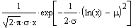

Log Normal Distribution |
Distributions associated with the Log-Normal Equation:

dlnorm(x, μ, σ) Returns the probability density for value x.
plnorm(x, μ, σ) Returns the cumulative probability distribution for value x.
qlnorm(p, μ, σ) Returns the inverse cumulative probability distribution for probability p.
rlnorm(m, μ, σ) Returns a vector of m random numbers having the log normal distribution.